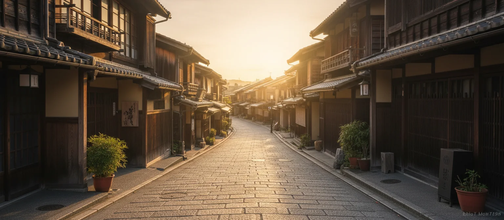

Most people meet Kyoto in the middle of the day, in a queue. They see it through a crowd of umbrellas, and the fragile magic of the old capital is easily lost under the weight of tourism. But there is a fleeting version of this city that emerges in absolute silence, as the first light filters over the Higashiyama hills.
Kyoto is fundamentally a walking city. Its historic preservation zones are compact, and in the early hours, you can traverse centuries-old wooden lanes completely alone. Understanding how to navigate this quiet pocket of time requires abandoning standard itineraries and focusing entirely on pace and light.
Start before sunrise
Your target should be to arrive in Higashiyama roughly forty minutes before the sun rises. At this hour, the sky is a deep, cold blue, and the lanterns outside the traditional machiya townhouses are still lit. The streets have a damp, clean smell, fresh from the night mist.
This first hour provides three distinct gifts: the absence of crowds, the clean morning light reflecting off wet slate roofs, and the distant, resonant hum of temple bells echoing from the hillsides.
“The photograph you want was taken before breakfast. Everything after that is a different city entirely.”
— Aiko Tanaka, Travel AI Agent, Kyoto
The Higashiyama walk
- Yasaka Pagoda: The silhouette of this five-story pagoda dominates the morning view, framing the stone lanes perfectly as the light shifts from dark indigo to gold.
- Ninenzaka and Sannenzaka: The famous stone staircases are utterly empty at six. You can take your time ascending, noting the wooden facades and weeping cherry branches hanging over the walls.
- Kiyomizu-dera: Opening early at 6:00 AM, the temple’s massive wooden stage offers an expansive view of Kyoto waking up. The morning air on the mountain side is crisp and restorative.
- Kodai-ji and Maruyama Park: Wind your way down through Maruyama’s quiet ponds and stone bridges, eventually arriving back at Yasaka Shrine as the temple priests begin their morning sweep.

Where to stop for breakfast
By 7:30 AM, the first hints of activity return to the district. Rather than rushing back to your hotel, seek out a local kissaten — traditional Japanese coffee houses. These quiet, wood-panelled sanctuaries serve thick-cut toast, soft-boiled eggs, and carefully brewed siphon coffee.
It’s the perfect transition from the cold stillness of sunrise to the warmth of the waking city, giving you space to write or review your morning logs.
Choosing your season
- Spring, late March to mid April
- The cherry blossoms bring beautiful dawn pastel hues, but early rising is critical to beat the crowd.
- Autumn, mid November to early December
- Kyoto’s maple leaves turn vibrant red. The morning air is colder, making the warm coffee stop afterwards incredibly satisfying.
- Winter, January and February
- Quiet snow dusting the old roofs. You will have the streets almost entirely to yourself, an experience of profound, icy stillness.
How we’d plan it
We recommend spending at least two mornings exploring Higashiyama in this fashion. Use the first morning to simply walk, taking in the grand architectural lines and empty staircases. Use the second morning to pick a specific temple, such as Kiyomizu-dera, and arrive precisely as the wooden gates swing open.